Expositionsgrenzwerte für inkohärente optische Strahlung
(1) Die biophysikalisch relevanten Expositionswerte für optische Strahlung lassen sich anhand der nachstehenden Formeln bestimmen. Welche Formel zu verwenden ist, hängt von dem Spektralbereich der von der Quelle ausgehenden Strahlung ab; die Ergebnisse sind mit den entsprechenden Expositionsgrenzwerten der Tabelle A2.1 zu vergleichen. Für die jeweilige optische Quelle können mehrere Expositionsgrenzwerte relevant sein.
(2) Die Buchstaben a) bis o) beziehen sich auf die entsprechenden Zeilen in Tabelle A2.1.
| a)1) | 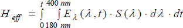 | 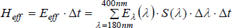 | |
| b) | 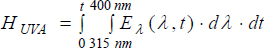 | 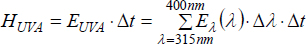 | |
| c), d) | 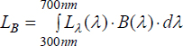 | 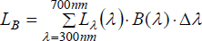 | |
| e, f) | 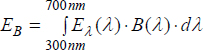 | 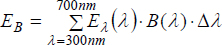 | |
| g, h, i) | 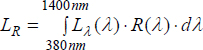 | 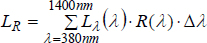 | |
| j, k, l) | 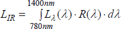 | 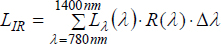 | |
| m, n)2) | 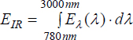 | 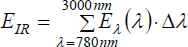 | |
| o)2) | 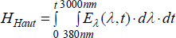 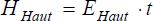 | 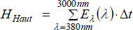 |
Kommentare zu Tabelle A2.1:
| 1) | Strahlung unterhalb von 180 nm wird in Luft sehr stark absorbiert und kommt nur an wenigen Arbeitsplätzen vor. Bewertungen von Strahlungsexpositionen unterhalb von 180 nm sind daher nur sehr selten und nur bei sehr starker Strahlungsintensität in diesem Wellenlängenbereich notwendig. Über die Wichtungsfunktion S(λ) liegen unterhalb von 180 nm noch keine gesicherten Erkenntnisse vor, Hinweise zur Vorgehensweise sind in Abschnitt 6.7 dieser TROS IOS zu finden. |
| 2) | Es gibt Strahlungsquellen (beispielsweise Metallschmelzen), die erhebliche Strahlungsanteile im Wellenlängenbereich über 3 000 nm besitzen. Hier kann es erforderlich sein, Strahlungsanteile bis zu einer Wellenlänge von 20 µm mit zu berücksichtigen. Für die Formeln m), n) und o) ist die obere Integrations- bzw. Summengrenze auf 20 µm zu setzen. Zur Messung und Berechnung bei thermischen Strahlungsquellen sind Verfahren in der TROS IOS, Teil 2 "Messungen und Berechnungen von Expositionen gegenüber inkohärenter optischer Strahlung" angegeben. |
Hinweise:
| Eλ(λ,t), Eλ(λ) | spektrale Bestrahlungsstärke oder spektrale Leistungsdichte: die auf eine Fläche einfallende Strahlungsleistung je Flächeneinheit, ausgedrückt in Watt pro Quadratmeter pro Nanometer (W ⋅ m-2 ⋅ nm-1); Eλ(λ,t) und Eλ(λ) werden aus Messungen gewonnen oder können vom Hersteller angegeben werden; |
| Eeff | effektive Bestrahlungsstärke (UV-Wellenlängenbereich): Bestrahlungsstärke im UV-Wellenlängenbereich von 100 nm bis 400 nm, spektral gewichtet mit S(λ), ausgedrückt in Watt pro Quadratmeter (W ⋅ m-2); |
| H | Bestrahlung: das Integral der Bestrahlungsstärke über die Zeit, ausgedrückt in Joule pro Quadratmeter (J ⋅ m-2); |
| Heff | effektive Bestrahlung: Bestrahlung, spektral gewichtet mit S(λ), ausgedrückt in Joule pro Quadratmeter (J ⋅ m-2); |
| EUVA | Gesamtbestrahlungsstärke (UV-A): Bestrahlungsstärke im UV-A-Wellenlängenbereich von 315 nm bis 400 nm, ausgedrückt in Watt pro Quadratmeter (W ⋅ m-2); |
| HUVA | Bestrahlung: das Integral der Bestrahlungsstärke über die Zeit und die Wellenlänge im UV-A-Wellenlängenbereich von 315 nm bis 400 nm, ausgedrückt in Joule pro Quadratmeter (J ⋅ m-2); |
| S(λ) | spektrale Wichtung unter Berücksichtigung der Wellenlängenabhängigkeit der gesundheitlichen Auswirkungen von UV-Strahlung auf Auge und Haut, dimensionslos (Tabelle A2.2); |
| t, Δt | Zeit, Expositionsdauer, ausgedrückt in Sekunden (s); |
| λ | Wellenlänge, ausgedrückt in Nanometern (nm); |
| Lλ(λ) | spektrale Strahldichte der Quelle, ausgedrückt in Watt pro Quadratmeter pro Steradiant pro Nanometer (W ⋅ m-2 ⋅ sr-1 ⋅ nm-1); |
| R(λ) | spektrale Wichtung unter Berücksichtigung der Wellenlängenabhängigkeit der dem Auge durch sichtbare und IR-A-Strahlung zugefügten thermischen Schädigung, dimensionslos (Tabelle A2.3); |
| LR | effektive Strahldichte (thermische Schädigung): Strahldichte, spektral gewichtet mit R(λ), ausgedrückt in Watt pro Quadratmeter pro Steradiant (W ⋅ m-2 ⋅ sr-1); |
| LIR3) | effektive Strahldichte (thermische Schädigung bei schwachem visuellen Reiz): Strahldichte, spektral gewichtet mit R(λ), ausgedrückt in Watt pro Quadratmeter pro Steradiant (W ⋅ m-2 ⋅ sr-1); |
| B(λ) | spektrale Wichtung unter Berücksichtigung der Wellenlängenabhängigkeit der fotochemischen Schädigung des Auges, dimensionslos (Tabelle A2.3); |
| LB | effektive Strahldichte (fotochemische Schädigung): Strahldichte, spektral gewichtet mit B(λ), ausgedrückt in Watt pro Quadratmeter pro Steradiant (W ⋅ m-2 ⋅ sr-1); |
| EB | effektive Bestrahlungsstärke (fotochemische Schädigung): Bestrahlungsstärke, spektral gewichtet mit B(λ), ausgedrückt in Watt pro Quadratmeter (W ⋅ m-2); |
| EIR | Gesamtbestrahlungsstärke (thermische Schädigung): berechnete Bestrahlungsstärke im IR-Wellenlängenbereich von 780 nm bis 3000 nm, ausgedrückt in Watt pro Quadratmeter (W ⋅ m-2); |
| EHaut | Gesamtbestrahlungsstärke (sichtbar, IR-A und IR-B): berechnete Bestrahlungsstärke im sichtbaren und IR-Wellenlängenbereich von 380 nm bis 20 000 nm, ausgedrückt in Watt pro Quadratmeter (W ⋅ m-2); |
| HHaut | Bestrahlung: das Integral der Bestrahlungsstärke über die Zeit und die Wellenlänge im sichtbaren und IR-Wellenlängenbereich von 380 nm bis 3 000 nm, ausgedrückt in Joule pro Quadratmeter (J ⋅ m-2); |
| α | Winkelausdehnung: der ebene Winkel, unter dem eine Quelle von einem Raumpunkt erscheint, ausgedrückt in Milliradiant (mrad). |
| ϒ | Messempfangswinkel, ausgedrückt in Milliradiant (mrad); |
Kommentar zu den Hinweisen:
| 3) | Es wird zwischen der effektiven Strahldichte LR (380 nm bis 1400 nm) und der effektiven Strahldichte LIR (780 nm bis 1400 nm) unterschieden. Hintergrund ist die unterschiedliche Herkunft der Grenzwerte. Quellen oberhalb von 780 nm sind für das Auge in der Regel nicht sichtbar, daher ist die Pupille des Auges größer und die eintretende Strahlung entsprechend höher im Vergleich zur Pupille, die durch sichtbare Anteile kleiner ist. |
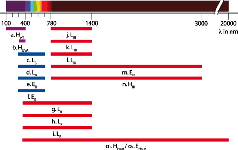
Abb. A2.1 Vereinfachte Darstellung der EGW entsprechend der Abschnitte 5 und 6 der TROS IOS, Teil 2 "Messungen und Berechnungen von Expositionen gegenüber inkohärenter optischer Strahlung"
| Tab. A2.1 | Expositionsgrenzwerte für inkohärente optische Strahlung |
| Kenn- buch- stabe | Wellen- länge in nm | Expositionsgrenzwert | Zeitbasis | Winkel | Körperteil | Gefähr- dung(en) | |||||
| a) | 100-400 (UV-A, UV-B, UV-C) | Heff = 30 J ⋅ m-2 | 8 h | Auge: Hornhaut Bindehaut Linse | Photokeratitis Konjunktivitis Kataraktoge- nese | ||||||
| Haut | Erythem Elastose Hautkrebs | ||||||||||
| b) | 315-400 (UV-A) | HUVA = 104 J ⋅ m-2 | 8 h | Auge: Linse | Katarakto- genese | ||||||
| c) | 300-700 (Blau- licht) siehe Fußnote 1 |
| t ≤ 10 000 s | bei α ≥ 11 mrad | Auge: Netzhaut | Photoretinitis | |||||
| d) | LB = 100 W ⋅ m-2 ⋅ sr-1 | t > 10 000 s | |||||||||
| e) |
| t ≤ 10 000 s | bei α < 11 mrad siehe Fußnote 2 | ||||||||
| f) | EB = 0,01 W ⋅ m-2 | t > 10 000 s | |||||||||
| g) | 380- 1 400 (Sicht- bar, IR-A) |
| t > 10 s | Cα = 1,7 bei α < 1,7 mrad Cα = α bei 1,7 mrad ≤ α ≤ 100 mrad Cα = 100 bei α > 100 mrad | Auge: Netzhaut | Netzhaut- verbrennung | |||||
| h) |
| 10 µs ≤ t ≤ 10 s | |||||||||
| i) |
| t < 10 µs | |||||||||
| j) | 780- 1 400 (IR-A) |
| t > 10 s | Cα = 11 bei α < 11 mrad Cα = α bei 11 mrad ≤ α ≤ 100 mrad Cα = 100 bei α > 100 mrad (Messgesichts- feld ϒ = 11 mrad) | Auge: Netzhaut | Netzhaut- verbrennung | |||||
| k) |
| 10 µs ≤ t ≤ 10 s | |||||||||
| l) |
| t < 10 µs | |||||||||
| m) | 780- 3 000 (IR-A, IR-B) | EIR = 18 000 ⋅ t-0,75 W ⋅ m-2 | t ≤ 1 000 s | Auge: Hornhaut Linse | Hornhaut- verbrennung Kataraktoge- nese | ||||||
| n) | HIR = 3 ⋅ 106 J ⋅ m-2 siehe Fußnote 5 | t > 1 000 s | |||||||||
| o1) | 380-106 (Sicht- bar, IR-A, IR-B) | HHaut = 20 000 t0,25 J ⋅ m-2 siehe Fußnote 6 | t < 10 s | Haut | Verbrennung | ||||||
| o2) | 380-106 (Sicht- bar, IR-A, IR-B) | EHaut = 7700 ⋅ t-0,34 W ⋅ m-2 siehe Fußnote 6 | 10 s ≤ t ≤ 1 000 s |
| Fußnote 1 | Der Bereich von 300 nm bis 700 nm deckt Teile der UV-B-Strahlung, die gesamte UVA-Strahlung und den größten Teil der sichtbaren Strahlung ab; die damit verbundene Gefährdung wird oft als Gefährdung durch "Blaulicht" bezeichnet. |
| Fußnote 2 | Bei stetiger Fixierung von sehr kleinen Quellen mit einem Öffnungswinkel von weniger als 11 mrad kann LB in EB umgewandelt werden. Dies ist normalerweise nur bei ophthalmischen Instrumenten oder einer Augenstabilisierung während einer Betäubung der Fall. Die maximale "Starrzeit" errechnet sich anhand der Formel tmax = 100/EB, wobei EB in W ⋅ m-2 ausgedrückt wird. Wegen der Augenbewegungen bei normalen visuellen Anforderungen werden 100 s hierbei nicht überschritten. |
| Fußnote 3 | Grenzwerte j, k, l, gelten für IR-Strahlungsquellen, die keine oder nur geringe Strahlung aus dem sichtbaren Spektralbereich emittieren. Weitere Hinweise dazu werden im TROS IOS, Teil 2 "Messungen und Berechnungen von Expositionen gegenüber inkohärenter optischer Strahlung" gegeben. |
| Fußnote 4 | Die Anwendung der Grenzwerte m, n wird im TROS IOS, Teil 2 "Messungen und Berechnungen von Expositionen gegenüber inkohärenter optischer Strahlung" erläutert. |
| Fußnote 5 | Dieser Expositionsgrenzwert gilt für einmalige oder wiederholte IR-Einwirkungen während einer täglichen Arbeitszeit von 8 h. Dauert die tägliche Arbeitszeit länger als 8 h, dann darf dennoch der festgelegte 8-Stunden-Expositionsgrenzwert nicht überschritten werden. |
| Fußnote 6 | Dieser Expositionsgrenzwert gilt für Expositionszeiten größer als 10 Sekunden bis 1 000 Sekunden. Ist die Expositionszeit länger als 1 000 Sekunden, müssen Abkühlzeiten von mindestens 5 Minuten eingeführt werden. |
| Tab. A2.2 | Wichtungsfunktion S(λ) (dimensionslos) |
| λ in nm | S(λ) | λ in nm | S(λ) | λ in nm | S(λ) | λ in nm | S(λ) |
| 180 | 0,0120 | 235 | 0,2400 | 290 | 0,6400 | 345 | 0,000240 |
| 181 | 0,0126 | 236 | 0,2510 | 291 | 0,6186 | 346 | 0,000231 |
| 182 | 0,0132 | 237 | 0,2624 | 292 | 0,5980 | 347 | 0,000223 |
| 183 | 0,0138 | 238 | 0,2744 | 293 | 0,5780 | 348 | 0,000215 |
| 184 | 0,0144 | 239 | 0,2869 | 294 | 0,5587 | 349 | 0,000207 |
| 185 | 0,0151 | 240 | 0,3000 | 295 | 0,5400 | 350 | 0,000200 |
| 186 | 0,0158 | 241 | 0,3111 | 296 | 0,4984 | 351 | 0,000191 |
| 187 | 0,0166 | 242 | 0,3227 | 297 | 0,4600 | 352 | 0,000183 |
| 188 | 0,0173 | 243 | 0,3347 | 298 | 0,3989 | 353 | 0,000175 |
| 189 | 0,0181 | 244 | 0,3471 | 299 | 0,3459 | 354 | 0,000167 |
| 190 | 0,0190 | 245 | 0,3600 | 300 | 0,3000 | 355 | 0,000160 |
| 191 | 0,0199 | 246 | 0,3730 | 301 | 0,2210 | 356 | 0,000153 |
| 192 | 0,0208 | 247 | 0,3865 | 302 | 0,1629 | 357 | 0,000147 |
| 193 | 0,0218 | 248 | 0,4005 | 303 | 0,1200 | 358 | 0,000141 |
| 194 | 0,0228 | 249 | 0,4150 | 304 | 0,0849 | 359 | 0,000136 |
| 195 | 0,0239 | 250 | 0,4300 | 305 | 0,0600 | 360 | 0,000130 |
| 196 | 0,0250 | 251 | 0,4465 | 306 | 0,0454 | 361 | 0,000126 |
| 197 | 0,0262 | 252 | 0,4637 | 307 | 0,0344 | 362 | 0,000122 |
| 198 | 0,0274 | 253 | 0,4815 | 308 | 0,0260 | 363 | 0,000118 |
| 199 | 0,0287 | 254 | 0,5000 | 309 | 0,0197 | 364 | 0,000114 |
| 200 | 0,0300 | 255 | 0,5200 | 310 | 0,0150 | 365 | 0,000110 |
| 201 | 0,0334 | 256 | 0,5437 | 311 | 0,0111 | 366 | 0,000106 |
| 202 | 0,0371 | 257 | 0,5685 | 312 | 0,0081 | 367 | 0,000103 |
| 203 | 0,0412 | 258 | 0,5945 | 313 | 0,0060 | 368 | 0,000099 |
| 204 | 0,0459 | 259 | 0,6216 | 314 | 0,0042 | 369 | 0,000096 |
| 205 | 0,0510 | 260 | 0,6500 | 315 | 0,0030 | 370 | 0,000093 |
| 206 | 0,0551 | 261 | 0,6792 | 316 | 0,0024 | 371 | 0,000090 |
| 207 | 0,0595 | 262 | 0,7098 | 317 | 0,0020 | 372 | 0,000086 |
| 208 | 0,0643 | 263 | 0,7417 | 318 | 0,0016 | 373 | 0,000083 |
| 209 | 0,0694 | 264 | 0,7751 | 319 | 0,0012 | 374 | 0,000080 |
| 210 | 0,0750 | 265 | 0,8100 | 320 | 0,0010 | 375 | 0,000077 |
| 211 | 0,0786 | 266 | 0,8449 | 321 | 0,000819 | 376 | 0,000074 |
| 212 | 0,0824 | 267 | 0,8812 | 322 | 0,000670 | 377 | 0,000072 |
| 213 | 0,0864 | 268 | 0,9192 | 323 | 0,000540 | 378 | 0,000069 |
| 214 | 0,0906 | 269 | 0,9587 | 324 | 0,000520 | 379 | 0,000066 |
| 215 | 0,0950 | 270 | 1,0000 | 325 | 0,000500 | 380 | 0,000064 |
| 216 | 0,0995 | 271 | 0,9919 | 326 | 0,000479 | 381 | 0,000062 |
| 217 | 0,1043 | 272 | 0,9838 | 327 | 0,000459 | 382 | 0,000059 |
| 218 | 0,1093 | 273 | 0,9758 | 328 | 0,000440 | 383 | 0,000057 |
| 219 | 0,1145 | 274 | 0,9679 | 329 | 0,000425 | 384 | 0,000055 |
| 220 | 0,1200 | 275 | 0,9600 | 330 | 0,000410 | 385 | 0,000053 |
| 221 | 0,1257 | 276 | 0,9434 | 331 | 0,000396 | 386 | 0,000051 |
| 222 | 0,1316 | 277 | 0,9272 | 332 | 0,000383 | 387 | 0,000049 |
| 223 | 0,1378 | 278 | 0,9112 | 333 | 0,000370 | 388 | 0,000047 |
| 224 | 0,1444 | 279 | 0,8954 | 334 | 0,000355 | 389 | 0,000046 |
| 225 | 0,1500 | 280 | 0,8800 | 335 | 0,000340 | 390 | 0,000044 |
| 226 | 0,1583 | 281 | 0,8568 | 336 | 0,000327 | 391 | 0,000042 |
| 227 | 0,1658 | 282 | 0,8342 | 337 | 0,000315 | 392 | 0,000041 |
| 228 | 0,1737 | 283 | 0,8122 | 338 | 0,000303 | 393 | 0,000039 |
| 229 | 0,1819 | 284 | 0,7908 | 339 | 0,000291 | 394 | 0,000037 |
| 230 | 0,1900 | 285 | 0,7700 | 340 | 0,000280 | 395 | 0,000036 |
| 231 | 0,1995 | 286 | 0,7420 | 341 | 0,000271 | 396 | 0,000035 |
| 232 | 0,2089 | 287 | 0,7151 | 342 | 0,000263 | 397 | 0,000033 |
| 233 | 0,2188 | 288 | 0,6891 | 343 | 0,000255 | 398 | 0,000032 |
| 234 | 0,2292 | 289 | 0,6641 | 344 | 0,000248 | 399 | 0,000031 |
| 400 | 0,000030 |
| Tab. A2.3 | Wichtungsfunktionen B(λ), R(λ) (dimensionslos) |
| λ in nm | B(λ) | R(λ) |
| 300 ≤ λ < 380 | 0,01 | — |
| 380 | 0,01 | 0,1 |
| 385 | 0,013 | 0,13 |
| 390 | 0,025 | 0,25 |
| 395 | 0,05 | 0,5 |
| 400 | 0,1 | 1,0 |
| 405 | 0,2 | 2,0 |
| 410 | 0,4 | 4,0 |
| 415 | 0,8 | 8,0 |
| 420 | 0,9 | 9,0 |
| 425 | 0,95 | 9,5 |
| 430 | 0,98 | 9,8 |
| 435 | 1,0 | 10,0 |
| 440 | 1,0 | 10,0 |
| 445 | 0,97 | 9,7 |
| 450 | 0,94 | 9,4 |
| 455 | 0,9 | 9,0 |
| 460 | 0,8 | 8,0 |
| 465 | 0,7 | 7,0 |
| 470 | 0,62 | 6,2 |
| 475 | 0,55 | 5,5 |
| 480 | 0,45 | 4,5 |
| 485 | 0,32 | 3,2 |
| 490 | 0,22 | 2,2 |
| 495 | 0,16 | 1,6 |
| 500 | 0,1 | 1,0 |
| 500 < λ ≤ 600 | 100,02⋅(450 - λ) | 1,0 |
| 600 < λ ≤ 700 | 0,001 | 1,0 |
| 700 < λ ≤ 1050 | — | 100,002⋅(700 - λ) |
| 1050 < λ ≤ 1150 | — | 0,2 |
| 1150 < λ ≤ 1200 | — | 0,2⋅100,02⋅(1150 - λ) |
| 1200 < λ ≤ 1400 | — | 0,02 |